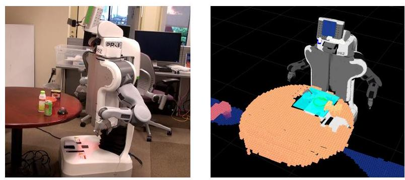
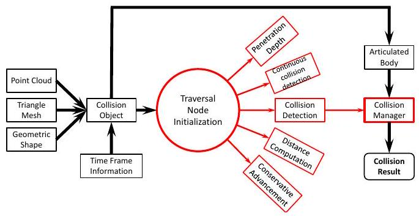
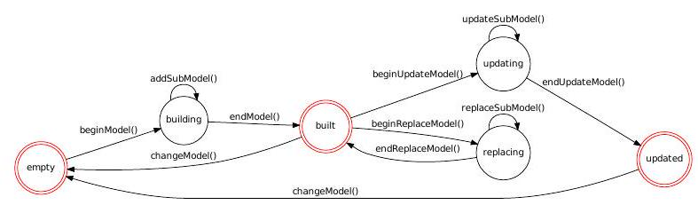
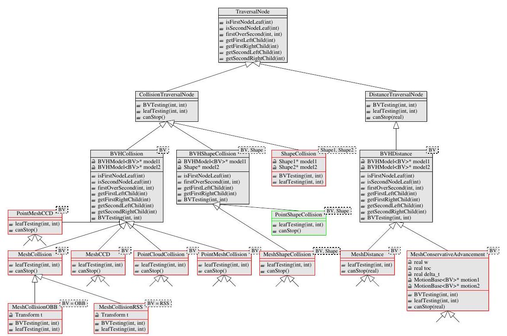
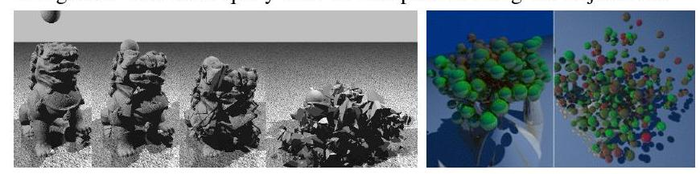
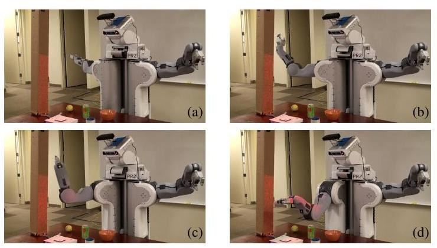
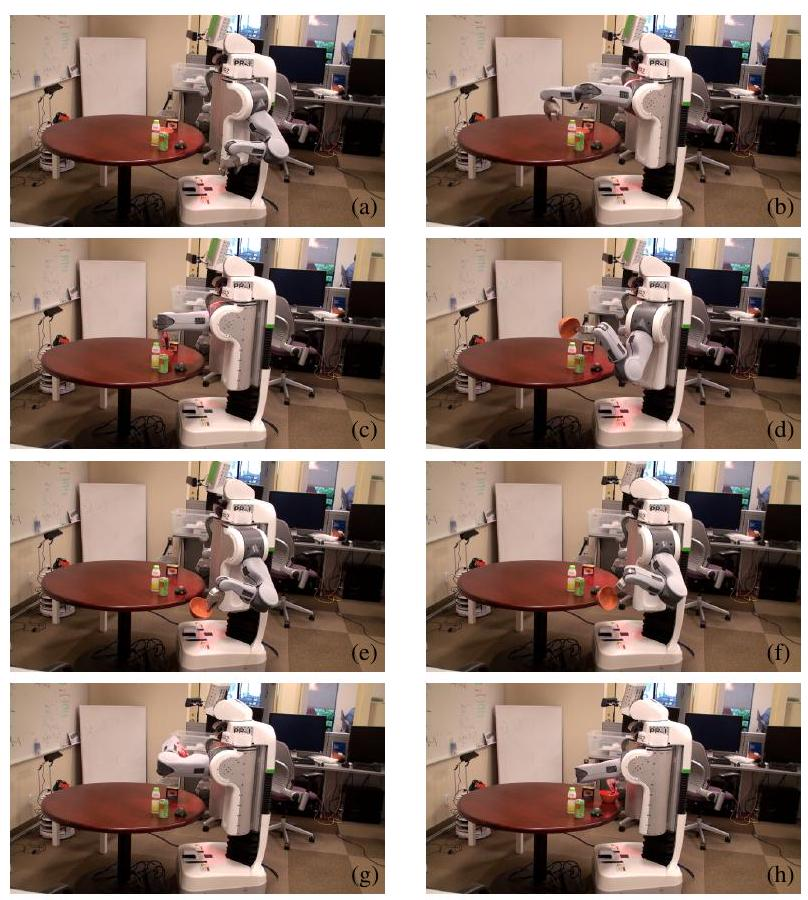

Jia Pan Sachin Chitta Dinesh Manocha
We present a new collision and proximity library that integrates several techniques for fast and accurate collision checking and proximity computation. Our library is based on hierarchical representations and designed to perform multiple proximity queries on different model representations. The set of queries includes discrete collision detection, continuous collision detection, separation distance computation and penetration depth estimation. The input models may correspond to triangulated rigid or deformable models and articulated models. Moreover, FCL can perform probabilistic collision checking between noisy point clouds that are captured using cameras or LIDAR sensors. The main benefit of FCL lies in the fact that it provides a unified interface that can be used by various applications. Furthermore, its flexible architecture makes it easier to implement new algorithms within this framework. The runtime performance of the library is comparable to state of the art collision and proximity algorithms. We demonstrate its performance on synthetic datasets as well as motion planning and grasping computations performed using a two-armed mobile manipulation robot.
The problems of collision and proximity computation are widely studied in various fields including robotics, simulated environments, haptics, computer games and computational geometry. The set of queries includes discrete collision checking, separation distance computation between two nonoverlapping objects, first point of contact computation between continuous moving objects, and penetration depth computation between overlapping objects. Furthermore, the underlying geometric representations may correspond to rigid objects (e.g., computer games), articulated models (e.g., mobile manipulators), deformable models (e.g., surgical or cloth simulators) or point-cloud datasets (e.g., captured using camera or LIDAR sensors on a robot).
Many efficient algorithms have been proposed to perform collision and proximity queries on various types of models. At a broad level, they can be classified based on the underlying query or the model representation [16], [6]. Some of the commonly-used techniques for polygonal models are based on bounding volume hierarchies, which can be used for collision and separation distance queries, and can be extended to deformable models. Moreover, many of these algorithms have been used to design widely used libraries such as I-COLLIDE, Bullet, ODE, RAPID, PQP, SOLID, OPCODE, V-Clip, Self-CCD, etc. However, these libraries[1]
Fig. 1: The PR2 is a mobile manipulation system with integrated stereo and laser sensors. Left: A pick and place task with the PR2 was among the experimental tasks used to validate FCL. Right: A visualization of the environment that the PR2 is working with.
have two main restrictions: 1) They are limited to specific queries (e.g., discrete collision checking or separation distance computation) on certain types of models (e.g., convex polytopes or rigid objects); and 2) it is hard to modify or extend these libraries in terms of using a different algorithm or representation. For example, SOLID [3] is designed to perform collision checking using axis-aligned bounding box (AABB) trees; RAPID is designed for collision detection using oriented bounding box (OBB) trees [9], and PQP performs separation distance queries using rectangular swept sphere (RSS) trees [13]. It is hard to use a different bounding volume with each of these libraries or use a different hierarchy computation or traversal scheme.
Many applications need to perform different collision and proximity queries. Figure 1 shows an example task where the mobile manipulation robot is executing a pick and place task using a combination of grasping, motion planning and control algorithms. Continuous collision detection queries are useful for grasp planning executed by the robot to generate grasps for the objects. The robot uses sample-based motion planners to compute collision-free paths. It is well known that a high fraction of running time for sample-based planning is spent in collision/proximity queries, underlining the need for fast efficient proximity and collision queries.
The local planning algorithms that form the underlying basis of sampling-based planners usually perform multiple discretized collision queries or may use continuous collision checking algorithms. Many sampling schemes either use separation distance computation [15] or penetration-depth estimation (e.g. retraction planners) to compute samples in narrow passages. Proximity information can also be used to plan paths that are further away from obstacles, allowing the robot to execute the plans at higher speeds.
Contributions: We present a new collision checking library, labeled FCL (Flexible Collision Library), which provides a unified interface to perform different proximity queries. Furthermore, it is able to handle a wide class of models
including rigid and deformable objects, articulated models and noisy point clouds. We propose a system architecture that is flexible in terms of performing different sets of queries and can be extended in terms of adding new algorithms and representations. These include proximity computations between convex polytopes, general polygonal models, articulated models, deformable models and noisy point clouds. In order to perform different queries, FCL models query computation as a traversal process along a bounding volume hierarchy. Different queries use the same traversal framework, but differ in terms of intermediate data structures and traversal strategies. The overall performance of the FCL is comparable to state-of-the-art algorithms.
We validate our techniques on a real-world system through integration with a pick and place manipulation task performed on the PR2 robot (Figure 1). The PR2 robot has both stereo and laser range finders that provide point cloud data at a high rate. The robot needs to calculate feasible motion (i.e., collision-free motion that satisfies some dynamics constraints), quickly through cluttered environments. We integrate our collision checking methods with the open source OMPL motion planning library [2] and demonstrate fast and accurate motion planning that allows the robot to complete its task. FCL is available as an independent library at https://kforge.ros.org/projects/fcl/. A ROS interface to FCL is also provided so that users can use FCL to perform collision and proximity queries with different robots.
The rest of the paper is organized as follows. We survey related work on collision and proximity queries in Section II. Section III gives an overview of the library and the detailed architecture is described in Section IV. We highlight a few applications and performance in Section V.
In this section, we first give a brief overview of prior work on collision and proximity queries. Furthermore, we highlight the underlying algorithms that are used in FCL to perform different queries.
The problems of collision detection and distance computations are well studied [6], [7], [16]. At a broad level, they can be classified based on algorithms for convex polytopes, bounding volume hierarchies, continuous collision detection, broad-phase collision detection and point-cloud collisions. Table I shows all the queries currently supported by FCL.
| Rigid Objects | Point Cloud | Deformable Objects | Articulated Objects | |
|---|---|---|---|---|
| Collision Detection | ||||
| Continuous Collision Detection | ||||
| Self Collision Detection | ||||
| Penetration Estimation | ||||
| Distance Computation | ||||
| Broad-phase Collision |
TABLE I: The design of FCL makes it possible to perform different proximity queries on various models. Current capabilities of FCL are shown with symbol. Symbol are capabilities that are currently not supported and may be added in the future. The symbol # refers to queries that can be implemented by existing capabilities of FCL. The continuous collision detection between point clouds is not completely implemented, and the current version only supports CCD queries between a point cloud and a triangulated (mesh) representation.
phase collision algorithm is combined with the kinematic model implementation in ROS to perform robot self-collision as well as collision detection with the environment.
In this section, we introduce different proximity queries that are supported in FCL and give an overview of the library.
Given two objects and as well as their configurations and , the discrete collision query (DCD query) returns a yes/no answer about whether the two objects are in collision or not, i.e., whether
is true. Optionally, collision query can also compute the contact points where the object boundary overlaps and the corresponding contact normals.
Given two objects and as well as their motions and , where , the continuous collision query
(CCD query) returns the a yes/no answer about whether the two objects are in collision within interval , i.e., whether
If a collision occurs, it also returns the first time of contact:
Given two non-overlapping objects and , as well as their configurations and , the separation distance query (SD query) returns the distance between them:
Optionally, distance query can also return the closest pair of points:
Given two objects and as well as their configurations and , the penetration depth query (PD query) returns the translational penetration depth between the objects when they are in collision:
The exact computation of translational penetration depth between non-convex or deformable models has a high complexity . As a result, FCL only provides the capability to approximate penetration depth between two mesh-based models or a mesh-polytope pair by computing the penetration between two colliding triangles or trianglepolytope pairs. FCL can also compute penetration depth between two convex polytopes using EPA algorithm [24].
Given a set of objects with their configurations , broad-phase collision query returns a yes/no answer about whether any two of the objects are in collision or not : i.e., whether
where computes the AABB of each object. Optionally, it also returns all the pairs of in-collision objects.
FCL is a fully templated C++ library that can perform various collision and proximity queries highlighted above. From an application perspective, FCL is designed to provide unified and extendable interfaces for collision and proximity computation algorithms. Moreover, it is designed to support different data representations, including triangle
meshes/soups and well-known shape primitives (e.g., sphere, cylinder). To achieve these goals, FCL models all collision and proximity queries between two objects as a traversal process along a hierarchical structure. Different queries can share the same traversal framework but may use different intermediate data structures and traversal strategies. As shown in Figure 2, the traversal process is performed in three steps in FCL:
Collision queries for articulated bodies or environments with multiple moving/deformable objects need to be performed efficiently. In FCL, this is handled by Collision Manager, which uses the N-body collision detection algorithm to handle such scenarios for different queries.

Fig. 2: Flow chart for FCL architecture: The black arrows represent the data flow, including construction of the hierarchical structure for each object and the collision manager for multiple objects. The red arrows represent the algorithm flow, including traversal node preparation and hierarchal traversal.
FCL consists of three main components: (a) object representation, (b) traversal node initialization, and (c) hierarchy traversal.
The object representation component in FCL deals with representing the objects in a hierarchical data structure so that collision and proximity queries can be performed efficiently. FCL supports objects in the form of unstructured triangle meshes/soups and basic geometric shapes, such as spheres and cylinders, which are widely used in many robotics applications. FCL can also handle deformable models. It doesn't make any assumptions about the deformation and assumes that the object boundary is represented as a triangulated mesh during each time step.
FCL supports seven types of basic geometric shapes, including sphere, box, cone, cylinder, capsule, convex mesh and plane, which are represented as a hierarchy with a single node. All these shape representations consist of two interfaces: 1) overlap, which checks for overlap between the bounding volume of the geometric shape with a bounding volume corresponding to a node in the hierarchy of some other object. It can also be used to perform culling operations. 2) intersect, which checks for exact intersection between the geometric objects or the triangle/point primitives of the other object. This is mainly used to perform exact proximity queries between the low level primitives.
The unstructured mesh/soup is represented as a bounding volume hierarchy and the specific type of bounding volume is specified as a template parameter. In FCL, four BV types are currently supported: AABB, OBB, RSS and kDOP. FCL includes the routines to perform overlap and distance queries using each of these BVs. Each BV is suitable for different kinds of objects, queries or applications. For example, OBB is regarded as a tight fitting bounding volume to the underlying shape or primitives, but performing an overlap test using OBB is more expensive as compared to AABB or kDOPs [9]. RSS is regarded as an efficient primitive to perform separation distance computation [13]. OBB and RSS are considered as more efficient s in terms of performing CCD between rigid models, because the BVH structure is unchanged during the motion or simulation, and only the transformation matrix associated with each BV needs to be updated. and are more suitable for between deformable models, because the cost of refitting these BVHs is relatively low compared to OBB or RSS. The refitting step is typically performed in a bottom-up manner, where each BV is updated.
The BVH data structure in FCL stores both the vertices and triangles of the underlying object, though the triangle information is not used for point cloud models. In order to perform CCD computations, the BVH data structure also keeps track of the position of the vertices from the last time step. As a result, the BVH structure can handle triangle meshes/soups and point clouds in a consistent manner.
FCL provides functions to compute the hierarchical representation for a given object. Furthermore, it uses a state machine to guarantee that the output of the construction process is a valid BVH structure. The usage of a state machine can help user to avoid generating invalid BVH structures. As shown in Figure 3, the state machine consists of three parts. The first is the standard way to construct a BVH: we start from an empty BVH and construct a valid structure by adding vertices/triangles into it (empty building built in Figure 3). However, in many applications (e.g., the local planning in motion planning), there is high spatial coherence between adjacent queries. In this case, we keep the structure of a BVH unchanged and only update the positions of the triangles associated with the leaf nodes and the intermediate BVs (i.e. refitting the ). Therefore, we provide a second method to replace the BVH: we start from a valid BVH, replace the object geometric representation by a new geometric representation and finally compute a updated BVH (built replacing built in Figure 3). In order to perform CCD queries, the BVH is used to compute a conservative bound of the swept volume of an object during a given time interval. Therefore, we update the BVH in order to consider the motion information and obtain a valid BVH for CCD (built updating updated in Figure 3). When the underlying topology of the object (i.e., the triangle information) changes, we empty the BVH state and build it from scratch (built empty or updated empty in Figure 3).
The BVH construction or refitting recursively splits the underlying geometry primitives into two parts and fits a tight bounding box to each part. There are different approaches to perform split and fit operations and it is useful to provide flexibility so that users can choose or implement the appropriate operations based on the underlying application. Therefore, our BVH data structure is composed of base classes for split and fit operations, and we also provide a default implementation for these operations.
Note that object representation may influence the results of a collision query. For example, assuming that is a small box within a large cylinder , a collision query will report a collision if both and are represented as polytopes, because each polytope corresponds to a solid shape. However, if both and are represented as triangle meshes, a collision query will report no collision because a triangle mesh only represents the object boundary, and not the interior.
Given two bounding volume hierarchies, the collision or proximity computation between them is usually performed by traversing the bounding volume test tree (BVTT) generated from the two BVHs [9]. Different collision or proximity computation algorithms tend to use different traversal schemes though the traversal framework is the same among different algorithms. In FCL, we separate the actual traversal framework from the traversal data and traversal strategies. The advantage of such a design is in terms of implementing a new collision or proximity algorithm: the users only need to implement the new traversal hierarchy and traversal strategies, instead of implementing the entire collision framework from scratch.
In FCL, we use a traversal node to provide all the necessary information to access BVH hierarchy structure and determine the traversal order. As shown in Figure 4 , all traversal node types are derived from one base class TraversalNode. Among the routines provided by TraversalNode, getFirstOverSecond is used to determine the traversal orders, i.e., which subtree of BVTT to traverse. All other routines provide the necessary information to traverse BVTT's tree hierarchy. Notice that these interfaces are also applicable to convex polytopes as they are recognized as special with a single node. For example, if the collision query is performed between a mesh and a cylinder, we need to ensure that the routines isSecondNodeLeaf and firstOverSecond return true values.
We use two subclasses CollisionTraversalNode and DistanceTraversalNode that correspond to the routines used to perform collision and distance queries, respectively. BVTesting checks the intersection between two bounding volumes and leafTesting checks the intersection between primitives (e.g., triangles or point clouds). The function canStop determines whether there is a collision or the shortest distance is computed, and we can terminate the recursion.
CollisionTraversalNode has three subclasses to handle collision between two BVHs, collision between a BVH and a basic shape and collision between two basic shapes, respectively. The leaf classes are traversal node types for different collision algorithms, such as continuous collision, point cloud collision, etc. When the bounding volume corresponds to an OBB or a RSS, we provide efficient implementation of overlap tests or separation distance computation between these BVs via template specialization.
The recursive traversal framework is used to perform all the queries. We provide recursive traversal schemes for various queries. The first is the recursive algorithm for collision queries, as shown in Algorithm 1, whose input could be any traversal node derived from CollisionTraversalNode. The second is the recursive algorithm for separation distance computation, as shown in Algorithm 2, whose input traversal nodes are derived from DistanceTraversalNode. We also provide a self-collision recursive traversal scheme, which is mainly used for deformable models.
The traversal recursive framework in FCL also provides support to maintain a front list, which can accelerate collision and proximity queries, if there is high spatial coherence between two subsequent queries. Intuitively, the front list is a set of internal and leaf nodes in the BVTT hierarchy, where the traversal terminates while performing a query during a given time instance. The front list reflects the subset of a BVTT that is traversed for that particular proximity query.
Algorithm 1: collisionRecurse(node, b1, b2, front_list), node
derived from CollisionTraversalNode.
begin
l1 ← node.isFirstNodeLeaf (b1)
l2 ← node.isSecondNodeLeaf (b2)
if l1 and l2 then
updateFrontList(front_list, b1, b2)
if node.BVTesting(b1, b2) then
return
node.leafTesting(b1, b2)
return
if node.BVTesting(b1, b2) then
updateFrontList(front_list, b1, b2)
return
if node.firstOverSecond(b1, b2) then
c1 ← node.getFirstLeftChild(b1)
c2 ← node.getFirstRightChild(b1)
collisionRecurse(node, c1, b2, front_list)
if node.canStop() and !front_list then
return
collisionRecurse(node, c2, b2, front_list)
else
c1 ← node.getSecondLeftChild(b2)
c2 ← node.getSecondRightChild(b2)
collisionRecurse(node, b1, c1, front_list)
if node.canStop() and !front_list then
return
collisionRecurse(node, b1, c2, front_list)
end
For collision queries with high spatial coherence, the front lists would be almost similar for two successive queries. Therefore, instead of starting the traversal from the BVTT root node, we perform the first query by starting from the BVTT root node and then start the subsequent query from the previous query's front list.

Fig. 3: State machine for BVH model construction, update and replace.
In this section we highlight the performance of FCL on simulated models as well as on a two-armed mobile manipulation robot.
The timing of different queries for a moving piano in a room are shown in Table II. In the results, we observe that the distance query and CCD query are both slower than the DCD query.
We check for collisions between moving objects by performing a single CCD or multiple DCDs on interpolated configurations. As shown in Table III, CCD query is faster than multiple DCD queries when checking the collision
Algorithm 2: distanceRecurse(node, b1, b2, front_list), node
derived from DistanceTraversalNode.
begin
l1 ← node.isFirstNodeLeaf(b1)
l2 ← node.isSecondNodeLeaf(b2)
if l1 and l2 then
updateFrontList(front_list, b1, b2)
node.leafTesting(b1, b2)
return
if node.firstOverSecond(b1, b2) then
a1 ← node.getFirstLeftChild(b1); a2 ← b2
c1 ← node.getFirstRightChild(b1); c2 ← b2
else
a1 ← b1; a2 ← node.getSecondLeftChild(b2)
c1 ← b1; c2 ← node.getSecondRightChild(b2)
d1 ← node.BVTesting(a1, a2)
d2 ← node.BVTesting(c1, c2)
if d2 < d1 then
if node.canStop(d2) then
updateFrontList(front_list, c1, c2)
else
distanceRecurse(node, c1, c2, front_list)
if node.canStop(d1) then
updateFrontList(front_list, a1, a2)
else
distanceRecurse(node, a1, a2, front_list)
else
if node.canStop(d1) then
updateFrontList(front_list, a1, a2)
else
distanceRecurse(node, a1, a2, front_list)
if node.canStop(d2) then
updateFrontList(front_list, c1, c2)
else
distanceRecurse(node, c1, c2, front_list)
end
| DCD query | PD query | CCD query | |
|---|---|---|---|
| Timing | 4 | 8 | 5.5 |
TABLE II: Average collision/proximity query timing (in milliseconds) for the piano benchmark (in milliseconds) on 100 random configurations. The penetration depth estimation (PD) is more expensive than other queries.
status for a moving object, though a single DCD query is cheaper than a single CCD query.
| CCD query | Multiple DCD queries | Ave. DCD query | |
|---|---|---|---|
| Timing | 5.5 | 42.4 | 3.86 |
TABLE III: Timing for collision checking between moving objects on the piano benchmark (in milliseconds): Each collision query is performed 100 times with random initial and goal settings and the average time is shown for CCD query and DCD queries (performed on 11 sampled positions along the trajectory).
We also tested FCL's performance on two widely used non-rigid deformable benchmarks (Figure 5) and the query times are shown in Table IV. We also highlight the relative performance of DCD and CCD queries on these benchmarks.
FCL supports an experimental algorithm to perform collision detection between point clouds or a point cloud and meshes [19]. We tested its performance on the piano in a room benchmark, where both piano and room are represented as point clouds. The average collision query timing is .

Fig. 4: Class hierarchy for traversal node: TraversalNode is the base class for traversal nodes of all collision/proximity algorithms. It includes interfaces that are needed to perform hierarchical traversal and implemented on all inherited node classes. CollisionTraversalNode and DistanceTraversalNode, both inherited from TraversalNode, define the API for collision query and distance query, respectively. The nodes at the next level of the class hierarchy specify the data elements needed for different types of object representations, e.g., BVHCollision is for collision query between unstructured data (mesh or point cloud), while BVHShapeCollision is used to perform collision query between convex polytopes. The leaf level of the class hierarchy includes nodes for specific types of queries. The red nodes correspond to the queries that are currently supported in FCL while the green nodes are the APIs to support other queries in the future.
| CCD query | Multiple DCD queries | Average DCD query | |
|---|---|---|---|
| breaking lion | 55.13 | 181.35 | 18.35 |
| deforming balls | 8.58 | 22.54 | 2.25 |
TABLE IV: Collision timing (in seconds) on deformable benchmarks shown in Figure 5. The DCD query uses 11 interpolants along the trajectories.

Fig. 5: Non-rigid benchmarks used for performing CCD and self-collision queries in FCL. In the left benchmark, a stone falls on top of a Chinese lion model and the lion gradually breaks into a high number of colliding pieces. The benchmark has triangles with 45 frames. The right benchmark consists of multiple moving objects. Each object undergoes deformable motion, and the objects collide with each other and the ground. It contains triangles with 94 frames.
FCL was integrated with the collision checking testing infrastructure in ROS. The infrastructure generates a series of random environments with a hundred objects in random locations. Each environment consists of objects of one type from among the following: box, cylinder, sphere and mesh primitives. The PR2 robot was used as the robot model in this test and 1000 random configurations were chosen for each arm of the robot in these environments. FCL was compared against prior collision checking capabilities in ROS, which are based on ODE [1]. Table V presents the aggregate collision checking times (in seconds) for these 1000 queries for FCL and ODE.
FCL was further evaluated by using it for a range of
| ODE | FCL | |
|---|---|---|
| Boxes | 0.780889 | 0.700815 |
| Spheres | 0.487176 | 0.570329 |
| Cylinders | 0.236988 | 0.264515 |
| Triangle Meshes | 2.340178 | 0.240228 |
applications on the PR2 mobile manipulator robot. The first
TABLE V: Collision checking timing (in seconds) for PR2 robot model corresponding to 1000 random configurations in environments with 100 obstacles of a single primitives type (e.g. boxes, spheres, cylinders or triangle meshes).
set of experiments involved motion planning in a simple environment. FCL was integrated as the collision checking library for the motion planners used in this experiment. Figure 6 shows a series of snapshots corresponding to the motion of the robot, as it moves one arm around a pole in the environment.

Fig. 6: The PR2 robot moves its arm around a pole. FCL was integrated as the collision checking library to perform this task.
FCL is also used as the collision checking library for grasping and manipulation pipeline implemented on a PR2 [4]. Figure 7 shows a series of snapshots of a task performed by the PR2 robot. The task being executed by
the robot involves moving a set of objects from one side of the table to the other. In the course of the task, the overall algorithm makes multiple calls to inverse kinematics and motion planning modules that use FCL as the underlying collision checking library. The task involves gathering live sensor data from the stereo cameras and laser scanning sensors on the PR2 robot. The environment is represented using a combination of pre-generated mesh models for objects on the table recognized using object detection algorithms and a voxel map (labeled the collision map) for other parts of the environment.

Fig. 7: The PR2 robot picks up a bowl and moves it to the side before placing it back on a table while avoiding all other objects in the environment. FCL is used as the collision library and integrated with motion planning and kinematics modules used in this task.
We present FCL, a new library to perform collision and proximity queries on different types of models. It provides a unified interface for various queries and is flexible in terms of implementing new algorithms or supporting other model representations. We demonstrate its performance in terms of performing discrete and continuous collision queries, separation distance queries, and penetration depth estimation among synthetic models and physical robots (e.g. a PR2). A ROS interface to FCL is also provided and it can be used with other robots. The current implementation of FCL has a few limitations. The penetration depth estimation only computes local penetration depth as opposed to global penetration depth, the performance of queries on point-cloud data can be relatively slow and needs to be tested with other sensor data, and the performance of proximity algorithms used for articulated models can be considerably improved.
There are many avenues for future work. These include overcoming the current limitations and testing its perfor- mance on complex planning scenarios and grasping operations. We can improve the performance of many underlying algorithms. Finally, we would like to develop a flexible and efficient architecture for multi-core CPUs and many-core GPUs.
[1] "Open dynamics engine," http://www.ode.org.
[2] "The open motion planning library," http://ompl.kavrakilab.org.
[3] "Software library for interference detection," http://www.win.tue.nl/ gino/solid
[4] M. Ciocarlie, K. Hsiao, E. G. Jones, S. Chitta, R. B. Rusu, and I. A. Sucan, "Towards reliable grasping and manipulation in household environments," in ISER, 2010.
[5] J. D. Cohen, M. C. Lin, D. Manocha, and M. Ponamgi, "I-collide: an interactive and exact collision detection system for large-scale environments," in Symposium on Interactive 3D Graphics, 1995, pp. .
[6] E. Coumans, Y. J. Kim, D. Manocha, R. Tonge, and S. eui Yoon, "Recent advances in real-time collision and proximity computations for games and simulations," in SIGGRAPH ASIA 2010 Courses, 2010, pp. 22:1-22:110.
[7] C. Ericson, Real-Time Collision Detection, 2004.
[8] E. G. Gilbert, D. W. Johnson, and S. S. Keerthi, "A fast procedure for computing the distance between complex objects in three dimensional space," IEEE Journal of Robotics and Automation, vol. 4, no. 2, April 1988.
[9] S. Gottschalk, M. C. Lin, and D. Manocha, "Obbtree: a hierarchical structure for rapid interference detection," in SIGGRAPH, 1996, pp. .
[10] N. K. Govindaraju, D. Knott, N. Jain, I. Kabul, R. Tamstorf, R. Gayle, M. C. Lin, and D. Manocha, "Interactive collision detection between deformable models using chromatic decomposition," ACM Transactions on Graphics, vol. 24, pp. 991-999, 2005.
[11] Y. J. Kim, M. C. Lin, and D. Manocha, "Fast penetration depth estimation between polyhedral models using hierarchical refinement," in WAFR, 2002.
[12] J. T. Klosowski, M. Held, J. S. B. Mitchell, H. Sowizral, and K. Zikan, "Efficient collision detection using bounding volume hierarchies of dops," IEEE Transactions on Visualization and Computer Graphics, vol. 4, pp. 21-36, 1998.
[13] E. Larsen, S. Gottschalk, M. C. Lin, and D. Manocha, "Fast proximity queries with swept sphere volumes," in ICRA, 2000, pp. 3719-3726.
[14] C. Lauterbach, Q. Mo, and D. Manocha, "gProximity: Hierarchical GPU-based operations for collision and distance queries," Computer Graphics Forum, vol. 29, no. 2, pp. 419-428, 2010.
[15] S. M. LaValle, Planning Algorithms, 2006.
[16] M. Lin and D. Manocha, "Collision and proximity queries," in Handbook of Discrete and Computational Geometry. CRC Press, Inc., 2004, pp. 787-808.
[17] M. C. Lin and J. F. Canny, "A fast algorithm for incremental distance calculation," in ICRA, 1991.
[18] F. Liu, T. Harada, Y. Lee, and Y. J. Kim, "Real-time collision culling of a million bodies on graphics processing units," ACM Transactions on Graphics, vol. 29, pp. 154:1-154:8, 2010.
[19] J. Pan, S. Chitta, and D. Manocha, "Probabilistic collision detection between noisy point clouds using robust classification," in ISRR, 2011.
[20] J. Pan and D. Manocha, "GPU-based parallel collision detection for real-time motion planning," in WAFR, 2011, pp. 211-228.
[21] S. Redon, Y. J. Kim, M. C. Lin, and D. Manocha, "Fast continuous collision detection for articulated models," in ACM Symposium on Solid Modeling and Applications, 2004, pp. 145-156.
[22] M. Tang, S. Curtis, S.-E. Yoon, and D. Manocha, "Iccd: Interactive continuous collision detection between deformable models using connectivity-based culling," IEEE Transactions on Visualization and Computer Graphics, vol. 15, pp. 544-557, 2009.
[23] M. Tang, Y. Kim, and D. Manocha, "CCQ: Efficient local planning using connection collision query," in WAFR, 2011, pp. 229-247.
[24] G. van den Bergen, "Proximity queries and penetration depth computation on 3d game objects," in Game Developers Conference, 2001.
Jia Pan and Dinesh Manocha are with the Department of Computer Science, the University of North Carolina, Chapel Hill (panj,dm)@cs.unc. edu
Sachin Chitta is with Willow Garage Inc., Menlo Park, CA 94025, USA (sachinc)@willowgarage.com
This work was supported by ARO Contract W911NF-10-1-0506, NSF awards 1000579 and 1117127, and Willow Garage. ↩︎